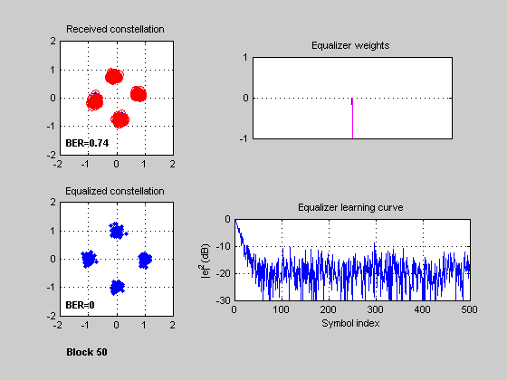
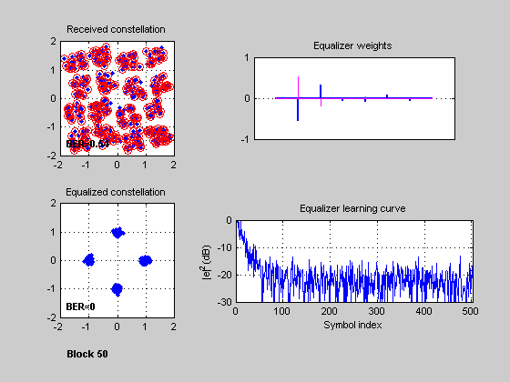
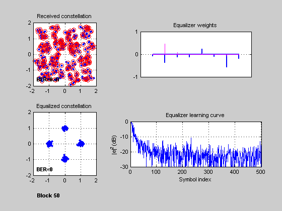

This script simulates a communication link with PSK modulation, raised-cosine pulse shaping, multipath fading, and adaptive equalization.
It is the first of two parts: Part I (adapteqpt1.m) sets simulation parameters and creates channel and equalizer objects. Part II (adapteqpt2.m) performs a link simulation based on these settings, which are stored in the MATLAB workspace. For information on the Part II script, enter demo('toolbox','comm') at the MATLAB prompt, and select "Adaptive Equalizer Simulation (Part II)".
Part I sets up three equalization scenarios, and calls Part II multiple times for each of these. Each call corresponds to a transmission block. The pulse shaping and multipath fading channel retain state information from one block to the next. For visualizing the impact of channel fading on adaptive equalizer convergence, the simulation resets the equalizer state every block.
To experiment with different simulation settings, you can edit the Part I script. For instance, you can set the ResetBeforeFiltering property of the equalizer object to 0, which will cause the equalizer to retain state from one block to the next.
Set parameters related to PSK modulation and the transmission block. The block comprises three contiguous parts: training sequence, payload, and tail sequence. All use the same PSK scheme. The training and tail sequences are used for equalization.
Tsym = 1e-6; % Symbol period (s) bitsPerSymbol = 2; % Number of bits per PSK symbol M = 2.^bitsPerSymbol; % PSK alphabet size (number of modulation levels) nPayload = 400; % Number of payload symbols nTrain = 100; % Number of training symbols nTail = 20; % Number of tail symbols xTrain = pskmod(randint(1, nTrain, M), M); % Training sequence xTail = pskmod(randint(1, nTail, M), M); % Tail sequence
Create structures containing information about the transmit and receive filters (txFilt and rxFilt). Each filter has a square-root raised cosine frequency response, implemented with an FIR structure.
The transmit and receive filters incorporate upsampling and downsampling, respectively, and both use an efficient polyphase scheme (see Part II script for more information). These multirate filters retain state from one transmission block to the next, like the channel object (see "Simulation 1: Frequency-flat fading channel" below).
The peak value of the impulse response of the filter cascade is 1. The transmit filter uses a scale factor to ensure unit transmitted power.
To construct the pulse filter structures, this script uses an auxiliary function adapteq_buildfilter.m. An improved approach would be to use multirate filter objects from the Filter Design Toolbox.
% Filter parameters nSymFilt = 8; % Number of symbol periods spanned by each filter osfFilt = 4; % Oversampling factor for filter (samples per symbol) rolloff = 0.25; % Rolloff factor Tsamp = Tsym/osfFilt; % TX signal sample period (s) cutoffFreq = 1/(2*Tsym); % Cutoff frequency (half Nyquist bandwidth) orderFilt = nSymFilt*osfFilt; % Filter order (number of taps - 1) % Filter responses and structures sqrtrcCoeff = firrcos(orderFilt, cutoffFreq, rolloff, 1/Tsamp, ... 'rolloff', 'sqrt'); txFilt = adapteq_buildfilter(osfFilt*sqrtrcCoeff, osfFilt, 1); rxFilt = adapteq_buildfilter(sqrtrcCoeff, 1, osfFilt);
Set signal-to-noise ratio parameter for additive white Gaussian noise.
EsNodB = 20; % Ratio of symbol energy to noise power spectral density (dB) snrdB = EsNodB - 10*log10(osfFilt); % Signal-to-noise ratio per sample (dB)
Begin with single-path, frequency-flat fading. For this channel, the receiver uses a simple 1-tap LMS (least mean square) equalizer, which implements automatic gain and phase control.
The Part II script (adapteqpt2.m) runs multiple times. Each run corresponds to a transmission block. The equalizer resets its state and weight every transmission block. (To retain state from one block to the next, you can set the ResetBeforeFiltering property of the equalizer object to 0.)
Before the first run, the Part II script displays the initial properties of the channel and equalizer objects. For each run, a MATLAB figure shows signal processing visualizations. The red circles in the signal constellation plots correspond to symbol errors. In the "Weights" plot, blue and magenta lines correspond to real and imaginary parts, respectively. (The HTML version of this demo shows the last state of the visualizations.)
simName = 'Frequency-flat fading'; % Used to label figure window. % Multipath channel fd = 30; % Maximum Doppler shift (Hz) chan = rayleighchan(Tsamp, fd); % Create channel object. chan.ResetBeforeFiltering = 0; % Allow state retention across blocks. % Adaptive equalizer nWeights = 1; % Single weight stepSize = 0.1; % Step size for LMS algorithm alg = lms(stepSize); % Adaptive algorithm object eqObj = lineareq(nWeights, alg, pskmod(0:M-1, M)); % Equalizer object % Link simulation nBlocks = 50; % Number of transmission blocks in simulation for block = 1:nBlocks, adapteqpt2; end % Run Part II script in loop.
chan =
ChannelType: 'Rayleigh'
InputSamplePeriod: 2.5000e-007
MaxDopplerShift: 30
PathDelays: 0
AvgPathGaindB: 0
NormalizePathGains: 1
PathGains: 0.3112- 0.9061i
ChannelFilterDelay: 0
ResetBeforeFiltering: 0
NumSamplesProcessed: 0
eqObj =
EqType: 'Linear Equalizer'
AlgType: 'LMS'
nWeights: 1
nSampPerSym: 1
RefTap: 1
SigConst: [1x4 double]
StepSize: 0.1000
LeakageFactor: 1
Weights: 0
WeightInputs: 0
ResetBeforeFiltering: 1
NumSamplesProcessed: 0
 Simulate a three-path fading channel (frequency-selective fading). The receiver uses an 8-tap linear RLS (recursive least squares) equalizer with symbol-spaced taps. The simulation uses the channel object from Simulation 1, but with modified properties.
simName = 'Linear equalization of frequency-selective fading channel'; % Multipath channel chan.PathDelays = [0 0.9 1.5]*Tsym; % Path delay vector (s) chan.AvgPathGaindB = [0 -3 -6]; % Average path gain vector (dB) reset(chan, 0); % Reset channel to known state. % Adaptive equalizer nWeights = 8; forgetFactor = 0.99; % RLS algorithm forgetting factor alg = rls(forgetFactor); % RLS algorithm object eqObj = lineareq(nWeights, alg, pskmod(0:M-1, M)); % Equalizer object eqObj.RefTap = 3; % Reference tap % Link simulation. Store BER values. for block = 1:nBlocks, adapteqpt2; BERvect(block)=BER; end avgBER2 = mean(BERvect) % Average BER over transmission blocks
chan =
ChannelType: 'Rayleigh'
InputSamplePeriod: 2.5000e-007
MaxDopplerShift: 30
PathDelays: [0 9.0000e-007 1.5000e-006]
AvgPathGaindB: [0 -3 -6]
NormalizePathGains: 1
PathGains: [1x3 double]
ChannelFilterDelay: 4
ResetBeforeFiltering: 0
NumSamplesProcessed: 0
eqObj =
EqType: 'Linear Equalizer'
AlgType: 'RLS'
nWeights: 8
nSampPerSym: 1
RefTap: 3
SigConst: [1x4 double]
ForgetFactor: 0.9900
InvCorrInit: 0.1000
InvCorrMatrix: [8x8 double]
Weights: [0 0 0 0 0 0 0 0]
WeightInputs: [0 0 0 0 0 0 0 0]
ResetBeforeFiltering: 1
NumSamplesProcessed: 0
avgBER2 =
0.0128
 The receiver uses a DFE with a six-tap fractionally spaced forward filter (two samples per symbol) and two feedback weights. The DFE uses the same RLS algorithm as in Simulation 2. The receive filter structure is reconstructed to account for the increased number of samples per symbol. This simulation uses the same channel object as in Simulation 2.
simName = 'Decision feedback equalizer (DFE)'; % Reset channel to known state. reset(chan, 0); % Receive filter nSamp = 2; % Two samples per symbol at equalizer input rxFilt = adapteq_buildfilter(sqrtrcCoeff, 1, osfFilt/nSamp); % Adaptive equalizer nFwdWeights = 6; % Number of feedforward equalizer weights nFbkWeights = 2; % Number of feedback filter weights eqObj = dfe(nFwdWeights, nFbkWeights, alg, pskmod(0:M-1, M), nSamp); eqObj.RefTap = 3; % Reference tap for block = 1:nBlocks, adapteqpt2; BERvect(block)=BER; end avgBER3 = mean(BERvect) block = 1; % Reset variable (in case Part II is run independently).
chan =
ChannelType: 'Rayleigh'
InputSamplePeriod: 2.5000e-007
MaxDopplerShift: 30
PathDelays: [0 9.0000e-007 1.5000e-006]
AvgPathGaindB: [0 -3 -6]
NormalizePathGains: 1
PathGains: [1x3 double]
ChannelFilterDelay: 4
ResetBeforeFiltering: 0
NumSamplesProcessed: 0
eqObj =
EqType: 'Decision Feedback Equalizer'
AlgType: 'RLS'
nWeights: [6 2]
nSampPerSym: 2
RefTap: 3
SigConst: [1x4 double]
ForgetFactor: 0.9900
InvCorrInit: 0.1000
InvCorrMatrix: [8x8 double]
Weights: [0 0 0 0 0 0 0 0]
WeightInputs: [0 0 0 0 0 0 0 0]
ResetBeforeFiltering: 1
NumSamplesProcessed: 0
avgBER3 =
6.5000e-004
